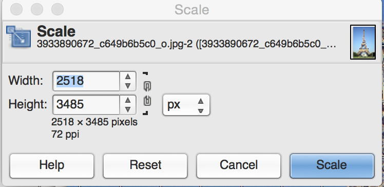
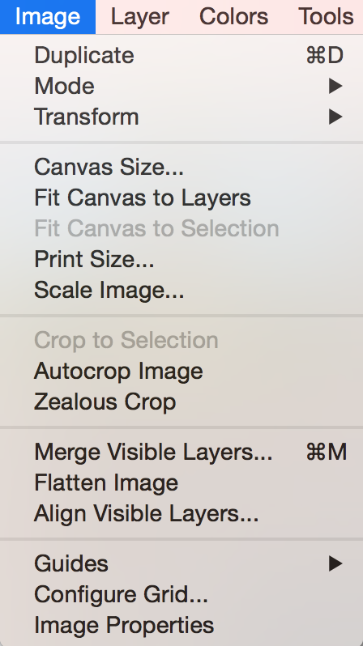
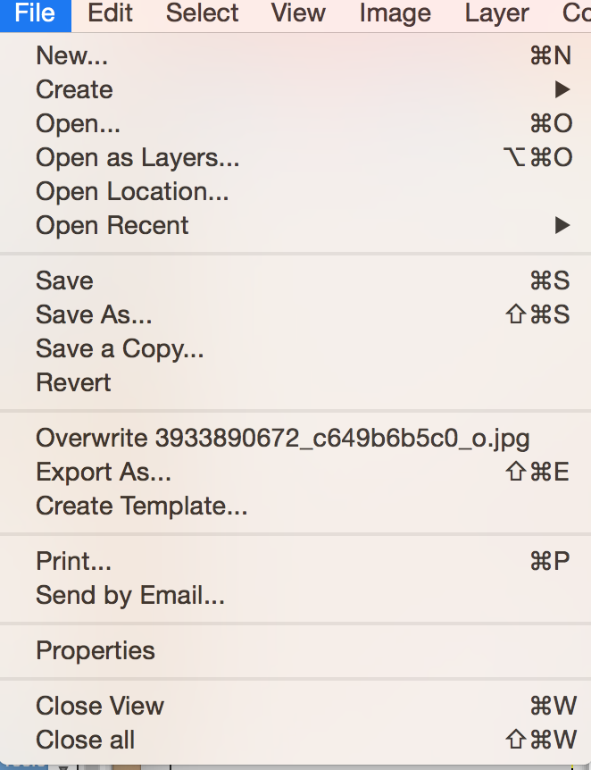
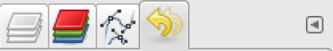
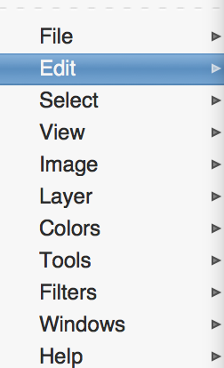
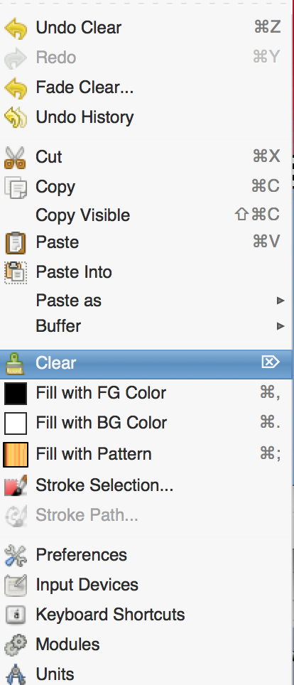
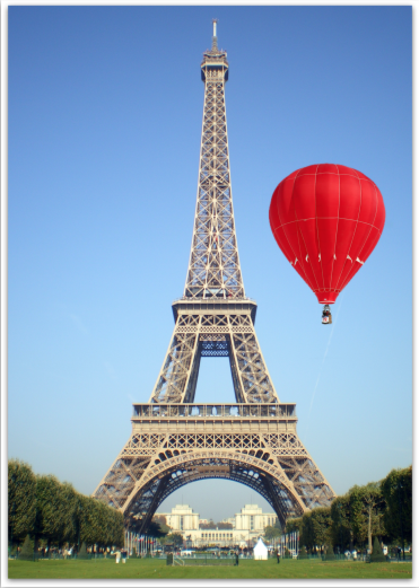
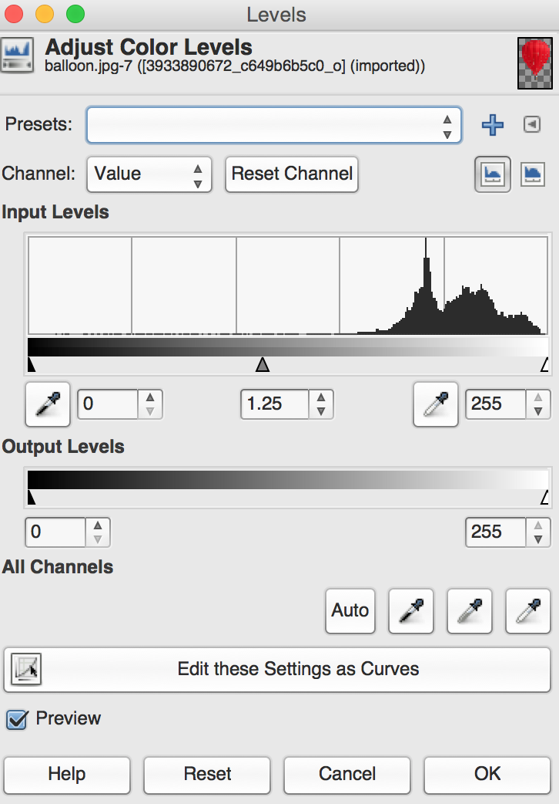
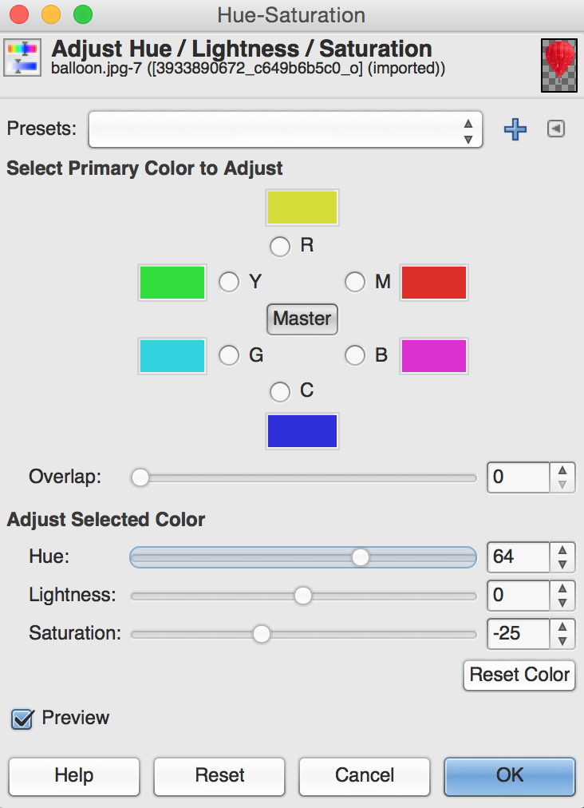
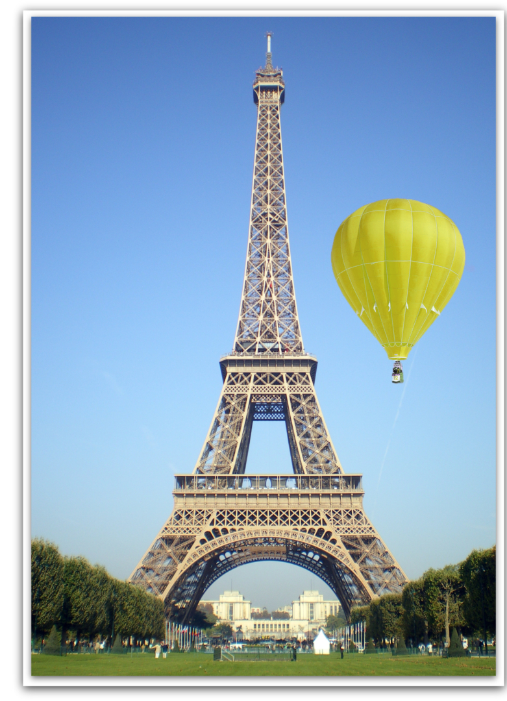

Man starter med at downloade de 2 billeder som man skal bruge, det kan man gøre her: Eiffel tårnet: https://www.flickr.com/photos/lukeas09/3933890672 Rød ballon: https://en.wikipedia.org/wiki/Hot_air_balloon#/media/File:2006_Ojiya_balloon_festival_011.jpg
Derefter åbner man billedet af Eiffeltårnet i Gimp, som man kan se er billedet meget stort og det er overhovedet ikke nødvendigt til det formål som vi skal bruge, så ovre i venstre side kan man klikke på “skaleringsværktøjet”, efter man har gjort det klikker man på billedet. SÅ kommer der et vindue op der ser sådan her ud:
Så klikker man på hængelåsen som gør sådan så højde og bredde følges ad, dvs. at billedet ikke kommer til at se “forkert ud”.
så ændre vi højden til 1080, hvilket er fuld HD
Derefter går vi op under billlede og klikker på “tilpas lærred til lag” eller “Fit canvas to layers”(hvis man har den på engelsk) ligesom jeg gør her:
Nu vil vi gerne have ballonen derind og det gør vi ved at klikke på Fil -> Åbn som lag (Open as Layers) ligesom jeg gør her:
Og vælger derefter ballon billedet. Som man kan se er ballonen for stor, så derfor bruger vi “skaleringsværktøjet” igen og klikker på hængelåsen og sætter højden til 350, så kan vi se at billedet er lidt væk fra Eiffeltårns billedet så jeg vælger flytteværktøjet og flytter billedet hen til Eiffeltårnet.
Man kan tydeligt se at ballonen er et andet billede, så hvordan fjerner man ballonen baggrund? Man start med at vælge markeringsværktøjet også kaldt “Magicwand”, man kan klikke 2 gange på markeringsværktøjet så man for dens egenskaber. Her kan man indstille dens tærskel værdi eller dens spacing (på engelsk), man kan nu markere billedet, en god værdi at indstille tærskelen på ved dette billede ville være 25, men man gøre som man har lyst.
Hvis man så klikker på billedet flere gange lægger man mærke til at man kun kan markere en del af billedet af gangen, men hvis man gerne vil ændre det kan man holde shift tasten i bund og man kan nu markere alt rundt om ballonen.
Når du har markeret det meste rundt om ballonen kan du klikke på delete tasten.
Hvis man så er rigtigt detaljeret og zoomer ind på billedet kan man se at der er nogle blå pixels rundt om ballonen hvis man vil rette det kan man gå ind under den gule pil
Under den menu kan man se sine tidligere skridt/handlinger frem til nu, så jeg starter derfor med at gå tilbage til der hvor jeg jeg ikke havde markeret ballonen endnu. Så markerer jeg igen det meste rundt om ballonen, men denne gang vil jeg ikke havde de blå pixel med, dem kan jeg fjerne ved at gå op i menuen Marker/Select og klikke på Forstør/Grow og så kommer der et vindue op også klikker jeg bare på en pixel, men nu vil jeg gerne have en blød overgang fra ballon til luft, så det ser mere naturligt ud så klikker ctrl z for at komme et skridt tilbage også går vi ind under Marker/Select og klikker på udtynd/feather også udtynder vi med 3 pixels som vist på billedet her:

så klikker man ok og på delete knappen, eller man kan højre klikke på det markeret område og gøre som jeg gjorde her:
 Altså at klikke på “clear” Du kan selvfølgelig klikke ctrl z og lave en endnu tyndere udtynding hvis det er det du syntes der er brug for. Som man kan se er der nogle træer forenden af ballon billedet som ser lidt irriterende ud, det kan man fjerne med hviskelæder værktøjet/ erasor tool. Hvis man så zoomer ud fra billedet nu ser det faktisk ret ægte ud som man kan set her:
Men hvad nu hvis man gerne vil lave ballonen gul eller lave den til en anden farve. Man kan starte med at gå ind under farver/colors (man skal huske at havde ballon layeret valgt) og derefter klikke på niveauer/levels så kan man lysne den lidt som jeg har gjort her:
fra 1.00 til 1.25. Derefter kan man klikke på farver/colors -> farvetone/mætning / Hue-saturation og sætte mætningen/saturationen lidt ned så det matcher billedet lidt mere under denne menu kan man også ændre ballonens farve til f.eks. gul ved at gøre sådan her:
Når man er færdig med billedet kan man eksporterer det som jpeg eller noget andet man foretrækker, og så vil dit færdige produkt se sådan her ud:
